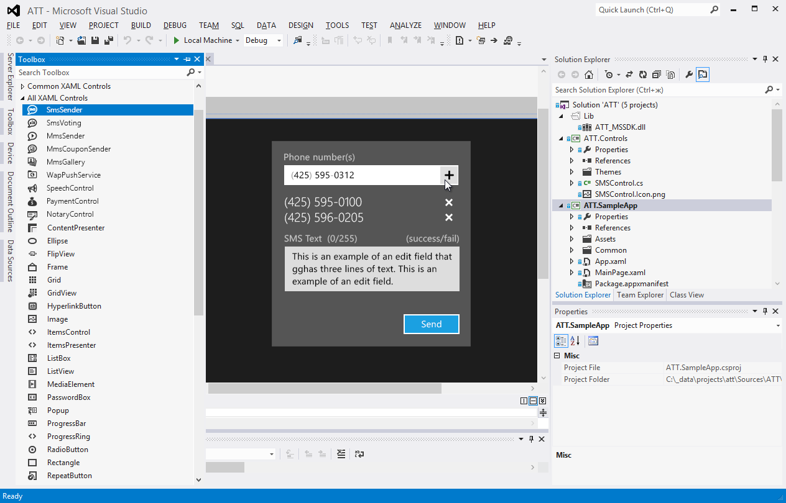
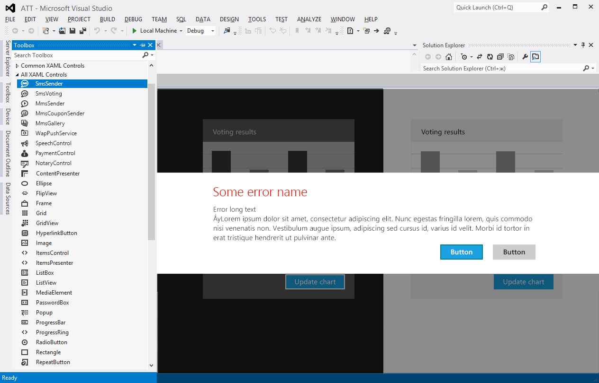

AT&T Windows 8 XAML Controls
Role
UI/UX Designer
What is AT&T Windows 8 XAML Controls?
The delivered solution provided developers with a visual controls and building blocks on the top of the Customer's REST API platform and enabled quick learning path to the API. Open source controls, which enable the following application features: send SMS, MMS and MMS Coupon, display Voting chart, and transcribe Voice to Text. The created solution is a Microsoft Visual Studio Extension of Customer’s API Platform, and with the Visual Studio 2012 RTM release has become available to all users who develop Windows 8 apps. The solution is integrated and listed within the Microsoft Visual Studio Gallery offering.
Challenge
Lack of technical documentation for the early adopters of Windows 8 and Visual Studio 2012, as they were officially launched after we delivered the project, was a challenge, but our team successfully have overcome it. We worked directly with Microsoft to overcome these issues.
As a result, within the first week of the project we gained all required knowledge to start work.
A Sampling of Screens

